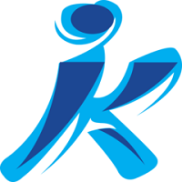
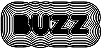

Korcagin's former student

First of all i would like to mention that the main reason why i chose Korchagin as my highschool was due to my curiosity to math, i would love
to solve math tasks all day long, so since first year of Korchagin i thought that my next choice will be PMF. But as the time passed
i realised that i wanted something more analytical, more logical problem solving therefore i chose FINKI as my final choice for my career.
FINKI student
I've mentioned that my next choice was FINKI, and i will absolutely never regret that, because as i learn more and make more research about software
engineering I realise that this is absolutely my field, everything i want for my future career. Everything is going well in FINKI except the fact that
this year we hadn't had the opportunity to meet each other therefore i hope everything will get better in the right time.
Buzz employee

As the exams passed i decided that it's time to make some money during the summer in order to pay my scholarship as well as have my own money at least
during the summer when i need them the most. Therefore buzz was my next choice, maybe definitely not my permanent choice but as a temporary job
it is pretty decent.